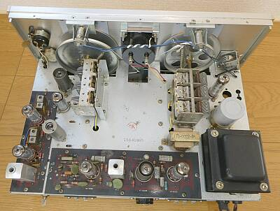
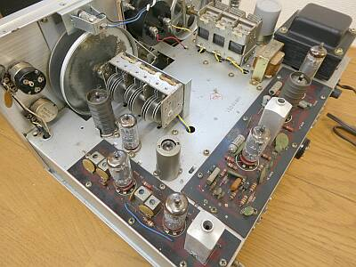
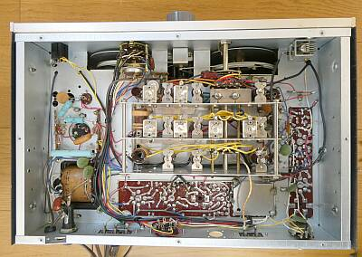
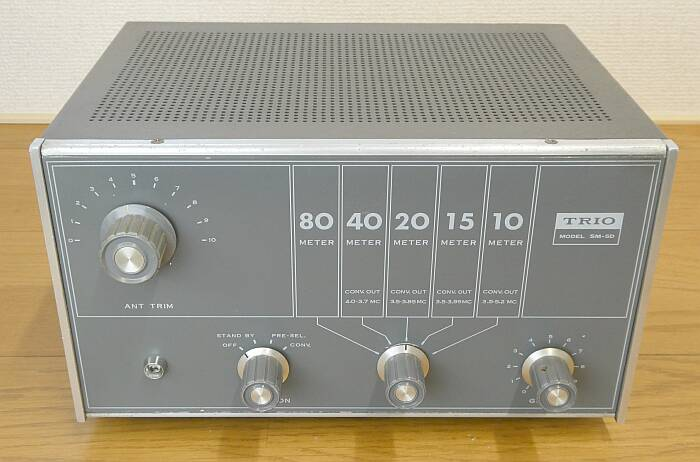
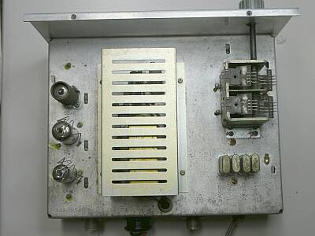
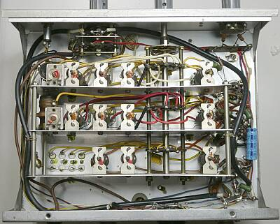
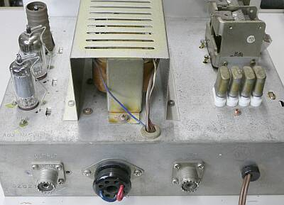
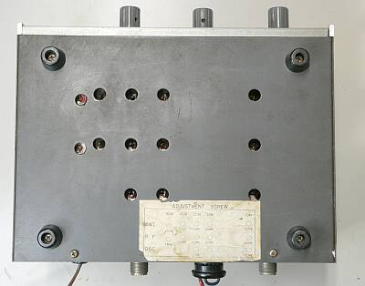

 |
シャーシ上面
プリント基板が採用されています
キットとしては、ずいぶんな進化でしょう
プリント基板が採用されていますが、信号の流れというか、真空管の配置は先代の９Ｒ-５９と全く同じで、設計的にも、９Ｒ-５９をそのまま引き継いだ感があります
真空管はすべてＭＴ管です
９Ｒ-５９では、整流管はＧＴ管（５９Ｄは、シリコン整流器）
Ｑマルチが廃止され（選択度の向上はメカフィルに振って）、プロダクト検波を採用
結果、真空管は９本から８本に減っています |
|
|
 |
プリント基板部のアップです
ＩＦ～ＡＦまでがその対象です
手前がＩＦ部
東光のメカニカルフィルタが採用されています
奥が検波～ＡＦ出力です
プロダクト検波、ＢＦＯ、ＡＦアンプの順です
|
|
|
 |
シャーシ下の様子です
中央にはコイルパックが鎮座しています
|
|
| プリコン ＳＭ-５Ｄ |
 |
プリアンプ＋クリスタルコンバータとして動作する製品です
ＩＦが４５５KHｚのシングルスーパーヘテロダイン方式で、１４MHｚ帯以上のハイバンドを受信することは、かなり厳しいことで、本機の採用で、ダブルスーパーヘテロダインとなることにより、状況は劇的に変化します
クリスタルコンバータの、クリスタル発振をさせなければ、すなわち周波数変換をしなければ、単なるプリアンプ・・・こういう設計です
ミキサー出力～バッファアンプに、同調回路はありません
言い方を変えると、簡易なＲＦ設計です
当然ながら「すっぽ抜け」等、問題はあります |
 |
シャーシ上面
極めてシンプルです
ＲＦアンプ ６ＢＡ６
ＭＩＸ／ＯＳＣ ６ＢＬ８
バッファアンプ ６ＢＡ６
コンバート対象は、７～２８ＭＨｚの４バンドです
この点が、ＳＭ-５との違いです（ＳＭ-５は、１４～２８ＭＨｚの３バンドです）
プリセレクタとしては、３.５～２８ＭＨｚ帯の５バンド全てに対応します（ＳＭ-５も同じ） |
|
|
 |
この頃は、＋Ｂ電圧をＳＷで切替するのは当たり前の設計で、本機の場合 コンバータとプリアンプとに切り替えがそのようになっています
何が起きるか・・・ロータリーＳＷの接点が焼けて（溶けて）接触不良が発生します（本機もそういう状態に陥っていました／もちろん修復しました）
スタンバイ操作も、リレーで＋B電圧の入り切りというのが普通に行われていた時代です |
|
|
 |
電源トランスはシールドしてあります
トランスのコスト減策かな、です |
|
|
 |
底面です
お決まりの調整穴が用意してあります
ＲＦ回路は、ちゃんとシールドした後でないと、きちんとした調整はできません
言い方を変えると、ケースに収めないと満足なシールドが得られない構造ということです |
プリコン単体の性能
９Ｒ-５９／５９Ｄあたりと組み合すには、良さそうです（もともと、そういう目的の商品）
が、ちょっとまともというか上位の受信機と組みわせると、増幅はするがノイズも信号に負けず増えることで、Ｓ／Ｎの低下・・・Ｓメータの振れは大きくなるが、感度は全く上がらない、むしろ聴感上の明瞭度は落ちる、という結果になります
同じ時期の同社ＳＳＢ用受信機ＪＲ-５００Ｓと組み合せても、このことがよく分かります
余談ながら、このＳＭ-５Ｄに表記のある周波数単位は、ＭＣです |
|
９Ｒ-５９Ｄと５９ＤＳの違い
真空管８球と、整流も含め７ダイオードと全く同じ構成です
発売時期は、５９Ｄが１９６６年４月、５９ＤＳが１９６９年１１月となっていました
正価は、￥１９，９００と、￥２２，８００です
回路図を見比べても、ヒューズが１Ａから２Ａに変わったくらい（消費電力４５Ｗは同じ）で、あとは全く同じに見えます
パーツＮｏ．も同じ・・・細かく言えば、シリコンダイオードの型式が変わっているくらい
あっ、周波数表示が、ＭＣからＭＨｚに変わっていました！！ |